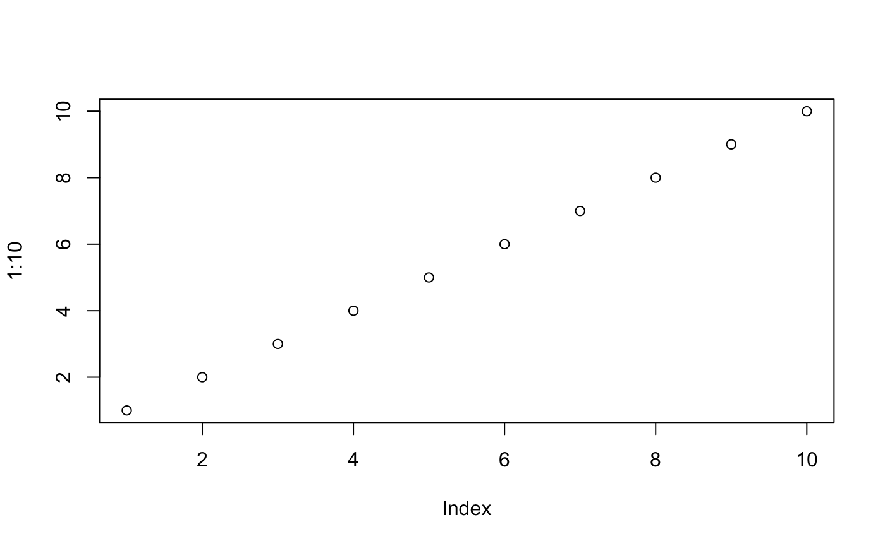
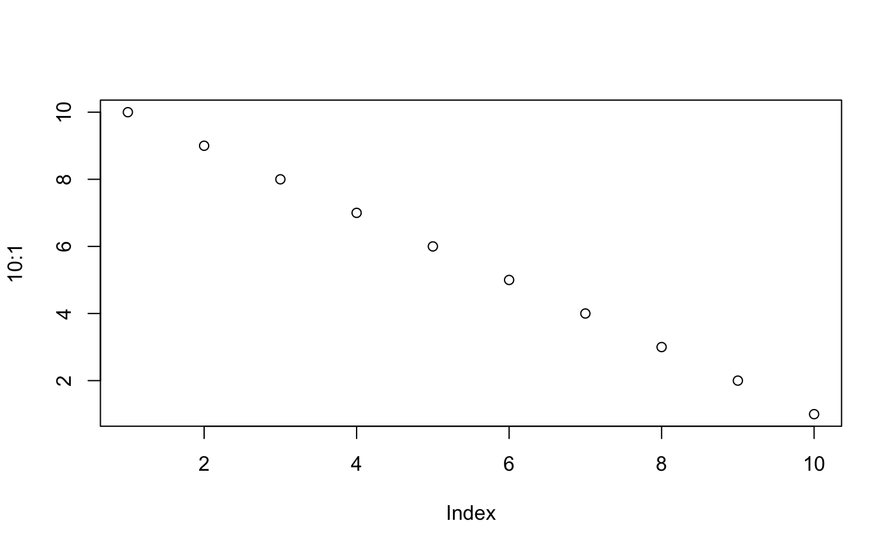

lineplots-vignette.RmdThis package was developed by the necessity to standardise the output from several variant callers used to call variants in tumor-only RNA-Seq samples. In our research we focused on patients with multiple samples over time during treatment. The final aim was to have data in a suitable format to produce informative visualisation of the variant allele frequency (VAF) (or other features) of the mutations over time, here the name lineplots. There would be in principle no difference if variants were called using DNA-Seq. lineplots supports ouputs from the following callers run in tumour-only mode: GATK3 MuTect2, VarScan2, VarDict and km. It also supports slightly modified output from superFreq. Below is a graphic summary of the main purpose behind lineplots.
add pic
Focusing on RNA-Seq, calling variants from RNA-Seq samples is increasing in popularity due to the large number of RNA-Seq data produced but only exploited for gene expression [papers]. Several benchmarking papers have been published comparing the performance of different callers [] and in recent years several new methods have been developed specifically to improve INDEL detection in RNA-Seq samples []. As part of a project done on two Leukemia clinical trials we assembled a pipeline to call variants in RNA-Seq (https://github.com/annaquaglieri16/RNA-seq-variant-calling) and use superFreq to analyse clonal tracking and mutational development across treatment. We used combined calls from VarDict [Lai2016-ws] and km (???) algorithm to define INDEL calls.
After calling SNVs, CNVs and INDELs with different programs, it is often useful to combine all the results in a standardised way. Usually different programs output variants in different ways using slightly different conventions which makes it challenging to easily combine the results. For example, superFreq returns SNVs in csv files but CNVs in Rdata files; VarDict uses the standard VCF output but with different specification of quality measures compared to, for example, MuTect2 or VarScan2; km outputs INDELs in tab delimited format and so on. This makes it challenging to both create a comprehensive overview of the results for one sample as well as to compare results across callers. Another challenge comes from calling variants independently at different time points for the same patient. Variants might be present before treatment but absent after treatment and when a patient relapse or vice versa. We found it necessary to fill in all the missing time points especially for visualisations purposes. While superFreq takes this problem into account by keeping any variants found at different time points, other programs like km or VarDict don’t.
The lineplots R package comprises several helper and import functions that can be used to convert output from any of the callers mentioned above to a standardised format.
In general, the import functions take in input variants for one patientID and for a set of studyGenes called by a caller as well as clinical information for all the patients in the cohort under investigation. The ouput can be in a tidy format, setting tidy = TRUE, where each row corresponds to a mutation for one samples and columns are samples and variant informations. studygenes are expected to be NCBI gene Symbols which means that variants need to be annotated with the gene they belong to before lineplots can be used. The clinical data at every time point is needed because if, for a patient, a variant is not detected at one time point, then only clinical information will be returned with default values for the variant information. This is useful for vidualisation purposes where one needs to track the development of mutation over time.
library(devtools)
devtools::install_github("annaquaglieri16/lineplots",force = TRUE)#detach("package:lineplots")
library(lineplots)
#> Loading required package: dplyr
#>
#> Attaching package: 'dplyr'
#> The following objects are masked from 'package:stats':
#>
#> filter, lag
#> The following objects are masked from 'package:base':
#>
#> intersect, setdiff, setequal, unionVCF to tidy formatThe function parse_vcf_output() allows to convert a .vcf file generated by three different callers (GATK3 MuTect2, VarDict and Samtools + VarScan2) to a data frame with standardised fields. This is because different callers annotate the INFO field in the VCF ouput in different ways, using different names for read depth, variant allele frequency etc… The output from parse_vcf_output() can then be used for import_any_for_lineplots(). If the variants in the VCF file were also annotated with the Variant Effect Predictor (VEP) (McLaren et al. 2016), the parse_vep_csq() can be subsequently used to parse the extra fields.
It is to be noted that VEP usually annotate the same variant in multiple ways, depending on whether a variants falls on several transcripts. VEP pastes together different annotations on the same line. The parse_vep_csq() will reshape the data and return it in a long format by stacking all the annotations one underneath each other. This has the potential of largely increasing the size of the ouput file and it is suggested that, if the input VCF file is too large, to, for example, subset variants based on genes of interest.
Both parsing functions are built on top of the VariantAnnotation Bioconductor package (Obenchain et al. 2014) to read VCF files into R and extract fields.
The example VCF files below were annotated with VEP. In order to extract VEP annotation, the file needs to be first parsed with parse_vcf_output and then with parse_vep_csq.
parse_vcf_output
annot_vcf_mutect <- system.file("extdata", "germline_mutect.vcf", package = "lineplots")
annot_vcf_varscan <- system.file("extdata", "germline_varscan.vcf", package = "lineplots")
annot_vcf_vardict <- system.file("extdata", "germline_vardict.vcf", package = "lineplots")
annot_vcf_mutect
#> [1] "/Users/quaglieri.a/Library/R/3.5/library/lineplots/extdata/germline_mutect.vcf"parsed_vcf_mutect <- parse_vcf_output(annot_vcf_mutect, caller = "mutect",sample_name = "Sample1")
#> Warning: Expected 2 pieces. Missing pieces filled with `NA` in 321 rows [1,
#> 2, 3, 4, 5, 6, 7, 8, 9, 10, 11, 12, 13, 14, 15, 16, 17, 18, 19, 20, ...].
parsed_vcf_varscan <- parse_vcf_output(annot_vcf_varscan, caller = "varscan",sample_name = "Sample1")
parsed_vcf_vardict <- parse_vcf_output(annot_vcf_vardict, caller = "vardict",sample_name = "Sample1")head(parsed_vcf_mutect)
#> Location caller chrom pos end ref alt qual filter
#> 1 chr1_36933772 mutect2 chr1 36933772 36933772 C T NA PASS
#> 2 chr1_36935370 mutect2 chr1 36935370 36935370 T C NA t_lod_fstar
#> 3 chr1_36937059 mutect2 chr1 36937059 36937059 A G NA PASS
#> 4 chr1_36939108 mutect2 chr1 36939108 36939108 T C NA PASS
#> 5 chr1_36941395 mutect2 chr1 36941395 36941395 G C NA t_lod_fstar
#> 6 chr1_36941539 mutect2 chr1 36941539 36941539 G GT NA PASS
#> genotype tot_depth VAF ref_depth alt_depth ref_forw ref_rev alt_forw
#> 1 0/1 532 0.017 523 9 261 262 7
#> 2 0/1 489 0.014 482 7 257 225 5
#> 3 0/1 488 0.504 249 239 123 126 109
#> 4 0/1 383 0.020 377 6 176 201 5
#> 5 0/1 226 0.016 223 3 122 101 1
#> 6 0/1 338 0.469 182 156 86 96 89
#> alt_rev start width ref_base_quality alt_base_quality
#> 1 2 36933772 1 15571 NA
#> 2 2 36935370 1 13932 NA
#> 3 130 36937059 1 7351 NA
#> 4 1 36939108 1 10997 NA
#> 5 2 36941395 1 6697 NA
#> 6 67 36941539 1 5449 NAhead(parsed_vcf_varscan)
#> Location caller chrom pos end ref alt qual filter
#> 1 chr1_36937059 varscan chr1 36937059 36937059 A G 29.0 PASS
#> 2 chr1_36941539 varscan chr1 36941539 36941539 G GT 39.0 PASS
#> 3 chr1_36942233 varscan chr1 36942233 36942233 T G 33.5 PASS
#> 4 chr1_36942436 varscan chr1 36942436 36942437 AT A 32.0 PASS
#> 5 chr1_36942470 varscan chr1 36942470 36942470 T C 38.5 PASS
#> 6 chr1_36942479 varscan chr1 36942479 36942479 T C 37.5 PASS
#> genotype tot_depth VAF ref_depth alt_depth ref_forw ref_rev alt_forw
#> 1 0/1 517 0.4855 266 251 145 121 141
#> 2 0/1 248 0.0323 240 8 155 85 6
#> 3 0/1 61 0.6557 19 40 8 11 26
#> 4 0/1 119 0.0672 106 8 82 24 6
#> 5 0/1 111 0.0721 103 8 61 42 7
#> 6 0/1 117 0.1368 101 16 61 40 11
#> alt_rev start width ref_base_quality alt_base_quality SampleName
#> 1 110 36937059 1 29 29 Sample1
#> 2 2 36941539 1 39 39 Sample1
#> 3 14 36942233 1 31 36 Sample1
#> 4 2 36942436 2 35 29 Sample1
#> 5 1 36942470 1 34 43 Sample1
#> 6 5 36942479 1 33 42 Sample1head(parsed_vcf_vardict)
#> Location caller chrom pos end ref
#> 1 chr1_36932480 vardict chr1 36932480 36932480 C
#> 2 chr1_36934606 vardict chr1 36934606 36934606 A
#> 3 chr1_36934756 vardict chr1 36934756 36934756 C
#> 4 chr1_36937059 vardict chr1 36937059 36937059 A
#> 5 chr1_36941539 vardict chr1 36941539 36941539 G
#> 6 chr1_36941540 vardict chr1 36941540 36941540 T
#> alt qual filter
#> 1 T 38.0 PASS
#> 2 G 38.0 PASS
#> 3 CCCATTTCTTGAGAGTAGAGGTGCTTTAGATGCAGCTCTGGGGCATGGGAGGGAG 34.2 p8
#> 4 G 38.0 PASS
#> 5 GT 34.7 PASS
#> 6 TT 38.7 PASS
#> genotype tot_depth VAF ref_depth alt_depth ref_forw ref_rev alt_forw
#> 1 0/1 31 0.0645 29 2 12 17 0
#> 2 0/1 21 0.0952 19 2 7 12 0
#> 3 1/0 32 0.5313 15 17 4 11 11
#> 4 0/1 397 0.4912 202 195 77 124 84
#> 5 0/1 278 0.1151 246 32 84 162 14
#> 6 0/1 268 0.3582 172 96 58 114 30
#> alt_rev width ADJVAF_ADJ_indels
#> 1 2 1 0.0000
#> 2 2 1 0.0000
#> 3 6 1 0.5313
#> 4 111 1 0.0000
#> 5 18 1 0.0971
#> 6 66 1 0.0299parse_vep_csq
Now we can parse the CSQ field added by the VEP.
stand_out <- parse_vep_csq(vcf_path = annot_vcf_varscan, vcf_df = parsed_vcf_varscan)
knitr::kable(stand_out[1:10,c("Location","caller","Feature_type","IMPACT")],caption = "Parse VCF from VarScan and annotated with VEP.")| Location | caller | Feature_type | IMPACT |
|---|---|---|---|
| chr1_36937059 | varscan | Transcript | LOW |
| chr1_36937059 | varscan | Transcript | LOW |
| chr1_36937059 | varscan | Transcript | LOW |
| chr1_36937059 | varscan | Transcript | LOW |
| chr1_36937059 | varscan | Transcript | LOW |
| chr1_36937059 | varscan | Transcript | LOW |
| chr1_36937059 | varscan | Transcript | LOW |
| chr1_36937059 | varscan | Transcript | LOW |
| chr1_36937059 | varscan | Transcript | MODIFIER |
| chr1_36937059 | varscan | Transcript | LOW |
import functionThe two output formats can be nested lists or tidy data frames which can be used for different visualisation purposes.
Below I am going to describe the usage of the import functions available in the package.
VCF to suitable inputs for import_any_for_lineplots()
The function import_any_for_lineplots() is a general function
Note the various macros within the vignette section of the metadata block above. These are required in order to instruct R how to build the vignette. Note that you should change the title field and the \VignetteIndexEntry to match the title of your vignette.
The html_vignette template includes a basic CSS theme. To override this theme you can specify your own CSS in the document metadata as follows:
output:
rmarkdown::html_vignette:
css: mystyles.cssThe figure sizes have been customised so that you can easily put two images side-by-side.

You can enable figure captions by fig_caption: yes in YAML:
output:
rmarkdown::html_vignette:
fig_caption: yesThen you can use the chunk option fig.cap = "Your figure caption." in knitr.
You can write math expressions, e.g. \(Y = X\beta + \epsilon\), footnotes1, and tables, e.g. using knitr::kable().
| mpg | cyl | disp | hp | drat | wt | qsec | vs | am | gear | carb | |
|---|---|---|---|---|---|---|---|---|---|---|---|
| Mazda RX4 | 21.0 | 6 | 160.0 | 110 | 3.90 | 2.620 | 16.46 | 0 | 1 | 4 | 4 |
| Mazda RX4 Wag | 21.0 | 6 | 160.0 | 110 | 3.90 | 2.875 | 17.02 | 0 | 1 | 4 | 4 |
| Datsun 710 | 22.8 | 4 | 108.0 | 93 | 3.85 | 2.320 | 18.61 | 1 | 1 | 4 | 1 |
| Hornet 4 Drive | 21.4 | 6 | 258.0 | 110 | 3.08 | 3.215 | 19.44 | 1 | 0 | 3 | 1 |
| Hornet Sportabout | 18.7 | 8 | 360.0 | 175 | 3.15 | 3.440 | 17.02 | 0 | 0 | 3 | 2 |
| Valiant | 18.1 | 6 | 225.0 | 105 | 2.76 | 3.460 | 20.22 | 1 | 0 | 3 | 1 |
| Duster 360 | 14.3 | 8 | 360.0 | 245 | 3.21 | 3.570 | 15.84 | 0 | 0 | 3 | 4 |
| Merc 240D | 24.4 | 4 | 146.7 | 62 | 3.69 | 3.190 | 20.00 | 1 | 0 | 4 | 2 |
| Merc 230 | 22.8 | 4 | 140.8 | 95 | 3.92 | 3.150 | 22.90 | 1 | 0 | 4 | 2 |
| Merc 280 | 19.2 | 6 | 167.6 | 123 | 3.92 | 3.440 | 18.30 | 1 | 0 | 4 | 4 |
Also a quote using >:
“He who gives up [code] safety for [code] speed deserves neither.” (via)
McLaren, William, Laurent Gil, Sarah E Hunt, Harpreet Singh Riat, Graham R S Ritchie, Anja Thormann, Paul Flicek, and Fiona Cunningham. 2016. “The Ensembl Variant Effect Predictor.” Genome Biol. 17 (1): 122.
Obenchain, Valerie, Michael Lawrence, Vincent Carey, Stephanie Gogarten, Paul Shannon, and Martin Morgan. 2014. “VariantAnnotation: A Bioconductor Package for Exploration and Annotation of Genetic Variants.” Bioinformatics 30 (14): 2076–8.
A footnote here.↩